acodcha's StarCraft Maps
Custom-made maps for the StarCraft: Brood War and StarCraft: Remastered video games by Blizzard Entertainment
This repository contains my custom-made maps for the StarCraft: Brood War and StarCraft: Remastered video games by Blizzard Entertainment. Maps used in professional leagues are typically designed for 1vs1 games, whereas my maps focus on 2vs2, 3vs3, and 4vs4 team games.
To play a map, simply download its .scx file and place it
anywhere in your StarCraft maps directory, which is typically
C:\Program Files (x86)\StarCraft\Maps\. When creating a
game, select the Use Map Settings option; otherwise, player
starting locations may be randomized rather than team-based.
My Battle.net BattleTag is acodcha#1294. If you see
me online, drop by and say hello!
2vs2 · 3vs3 · 4vs4 · Scenarios
| Careening Blues | Intertwined Platforms |
| 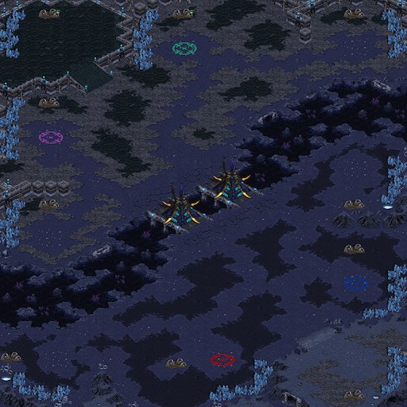 | 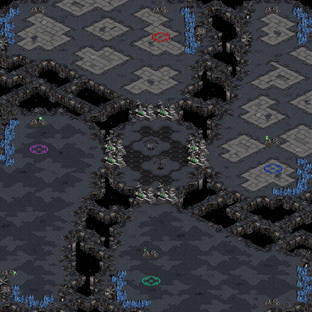 |
| Beltway Blitz | Cloistered Vale |
| 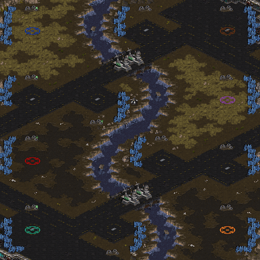 | 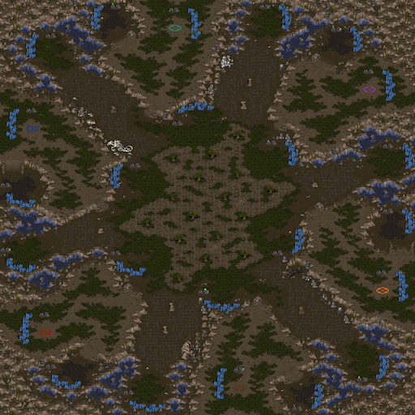 |
| Frigid Basin | Magmatic Delve |

|
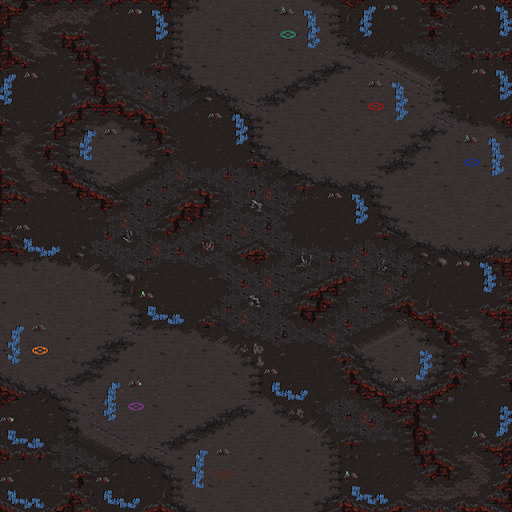 |
| Motley Turnpike | |
| 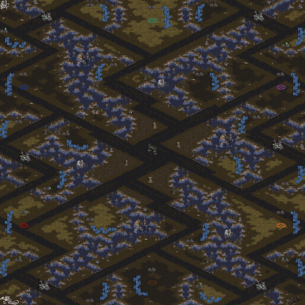 |
| Azurean Reliquary | Fractious Crater |
| 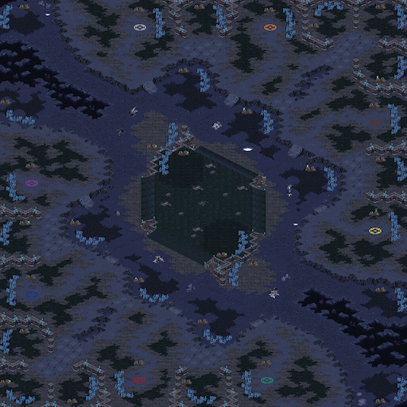 | 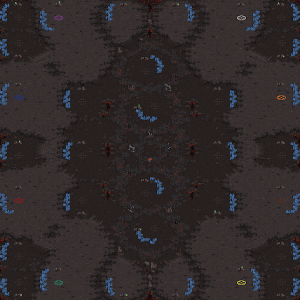 |
| Isthmus Scramble | Luxuriant Sanctuary |
| 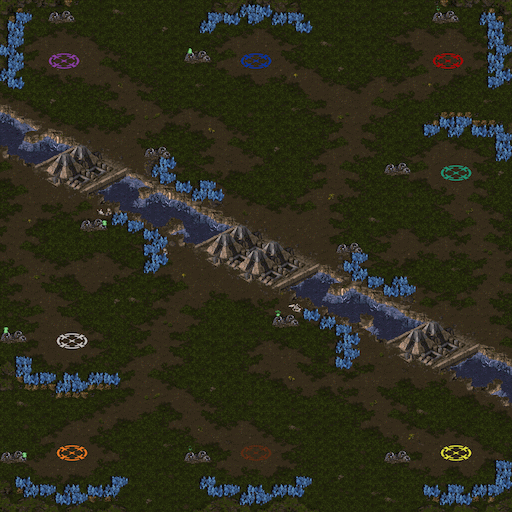 | 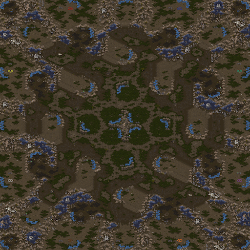 |
| Meddling Causeway | Stratal Concourse |
| 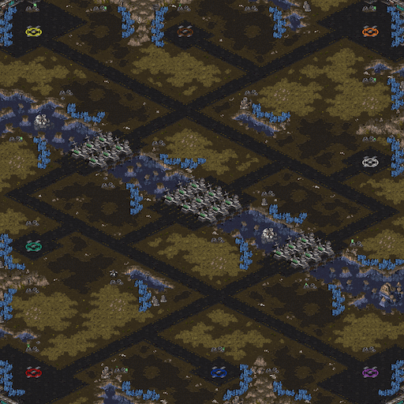 | 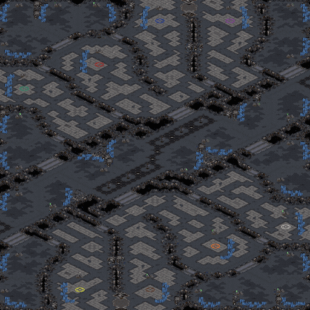 |
| Sweltering Tar | Vexing Junkyard |
| 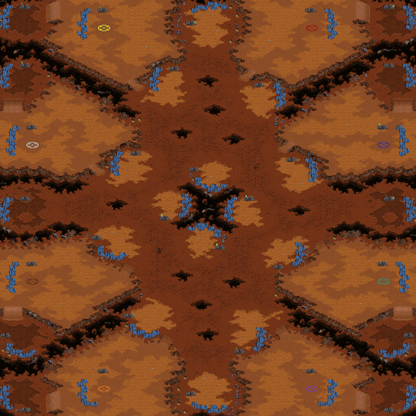 | 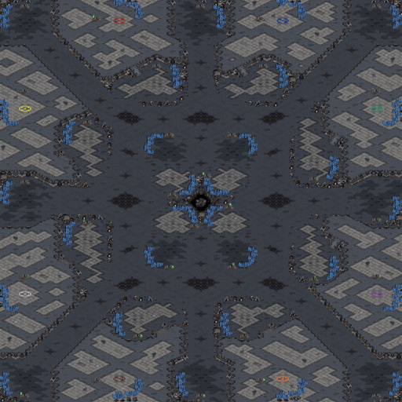 |
| Wintry Gully | |

|
| Cooperative Defense | Terran Obstacle Course |
| 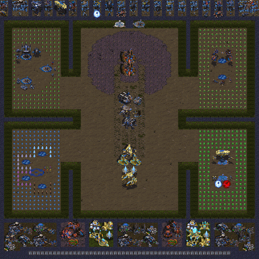 | 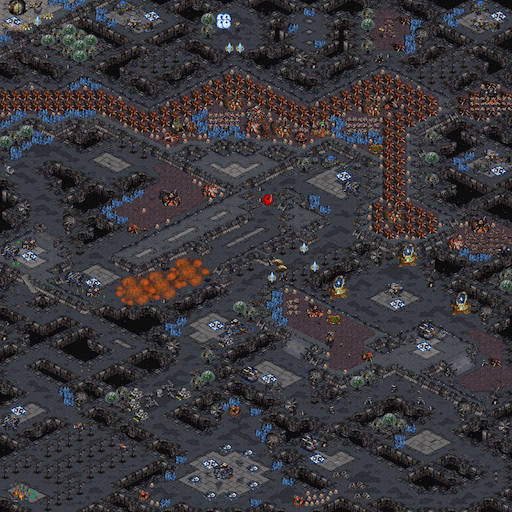 |
| Zerg Obstacle Course | |
This work is hosted on GitHub and maintained by Alexandre Coderre-Chabot. This work is licensed under the Creative Commons Attribution 4.0 International license and based on the StarCraft: Brood War and StarCraft: Remastered video games by Blizzard Entertainment. The contents, copyrights, and trademarks of everything involving StarCraft, StarCraft: Brood War, and StarCraft: Remastered are exclusively held by Blizzard Entertainment; I make no claim to any of these in any way. All maps are made using the Scmdraft 2 map editor by Stormcoast Fortress.